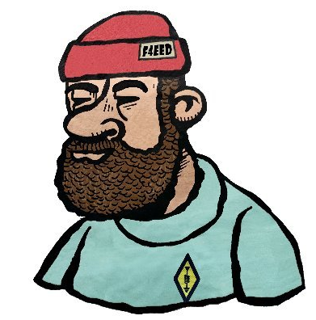

Calques GeoJSON (déplacer ici)
Département de la Loire
Gestion des risques
Associations Agréées de Sécurité Civile
Départements de Corse
Légende :
– aucun calque actif –

Déplacez la souris sur la carte...